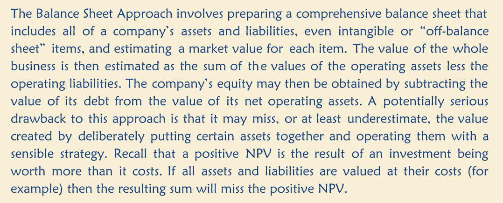
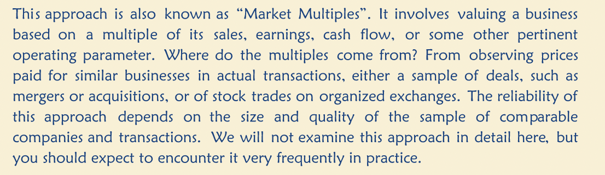
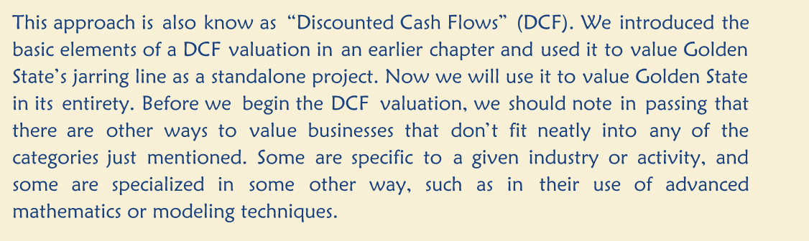
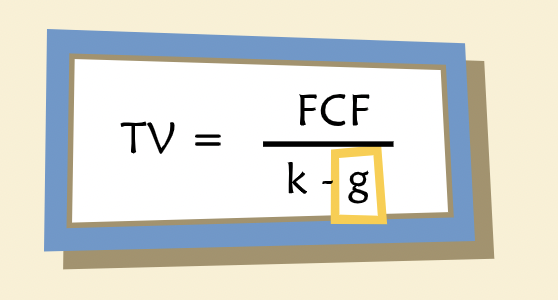
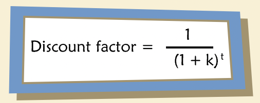
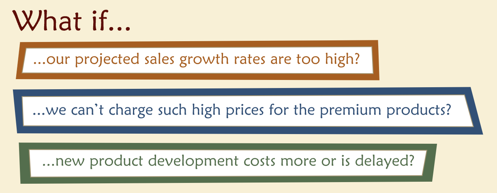

Valuing a Business
Contents
Valuing a Business¶
Basic Approaches¶
“The most common approaches to valuing a business fall into three main categories: the Balance Sheet Approach, the Market Approach and the Income Approach.”
Balance Sheet Approach¶

Market Approach¶

Income Approach¶

DCF Ingredients¶
Enterprise FCF¶
“The cash flows we want to discount to value a business are often called “Enterprise Free Cash Flows” or sometimes simply “Free Cash Flows” or “FCF.” They include the obvious elements of operating profit: revenue, cost of goods sold, selling, general, and administrative costs, taxes, and so forth. But they also include some additional elements that may be less intuitive.”
Pro Forma Financials¶
“How are projections for Enterprise FCF developed in practice? A firm’s expected future performance depends on many factors, some of which are outside management’s control. Nevertheless, two key determinants are management’s business strategy and operating plans.”
“Before employing FCF projections in a DCF valuation it makes sense to examine them carefully, to check for consistency and reasonableness.”
Discount Rates¶
“Though WACC is commonly used as a discount rate, it makes specific assumptions on tax rates, capital structure and tax shields.”
Terminal Value¶
“Projections prepared by management often stop after a relatively short planning period. In some industries (e.g., natural resources development) planning horizons are very long, but for others five years or so is not uncommon. In such cases, our analysis requires a terminal value.”
“The terminal value is the expected value of the enterprise at a specific future date, namely the end of the year-by-year projection period.”
“There are different ways of estimating a terminal value, depending on circumstances and the intentions of the firm’s owners. For many companies, the intent is to operate indefinitely as a going concern. Common approaches to estimating the terminal value of a going concern include application of market multiples (multiples of projected sales, earnings, or cash flow that are developed from observed market values of other firms), or perpetuity-value formulas. Sometimes the owners’ intent is not to operate indefinitely, but to sell the business or even liquidate its pieces. In such cases, the terminal value should represent an estimate of the sale price or the after-tax liquidation proceeds.”
“What do we mean by “Normalized free cash flow”? The normalization involves adjustments to margins, capital expenditures, depreciation, and change in net working capital intended to reflect a level for each that is sustainable indefinitely — that is, in perpetuity.” 
“A change in the long-run target debt ratio would change the weighted average cost of capital.”
“Useful benchmarks for g vary, depending on the business. However, they should include the long-term expected growth rate of nominal GDP. No business can grow faster than the economy forever — it would take over the world. Another is the long-term inflation rate, and a third is the long-term risk-free rate of return. A perpetual growth rate higher than any of these must be regarded with some suspicion.”
“What if a “reasonable” growth rate simply gives an unreasonably low terminal value? This sometimes happens and it usually is a sign that the point chosen for the terminal horizon is not a point at which the business has yet reached a steady state. It is nature’s way of telling us to pick a different point (presumably a later one) to be the terminal horizon, or to use a different model — not a perpetuity — for computing the terminal value.”
Putting it together¶

Reservation price — the maximum you would be willing to pay to buy a business.
“A good deal will satisfy both parties.”
Sensitivity Analysis¶
“Examples of managerial “what if” question are:” 
“Aside from managerial questions, another reason to perform sensitivity analyses is to gauge our confidence in the concluded value given that we may harbor some uncertainty about some of the inputs.”